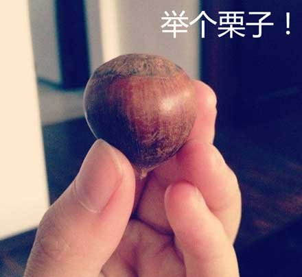
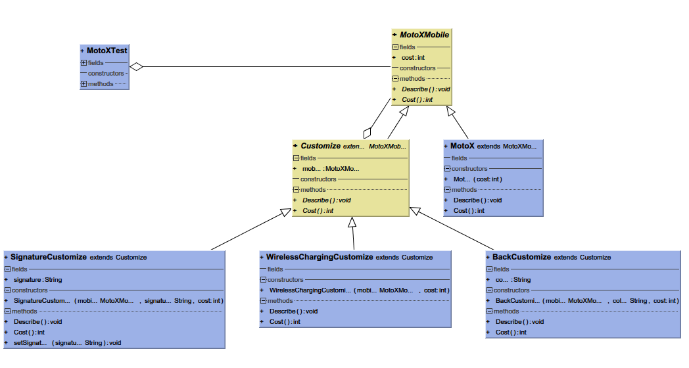
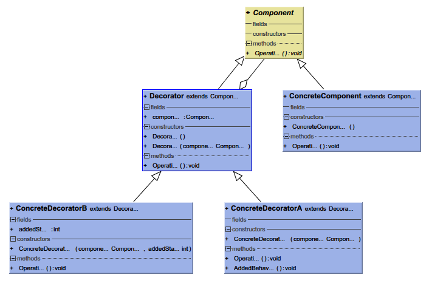

别名Wrapper
使用装饰者模式的主要是为了可以在客户端代码灵活地给对象增加预定义的行为。也就是可以在客户端代码中动态地用一个个的行为来装饰需要这些行为的对象，而不是在继承中获得这些行为。(这里的行为主要是指一些完成某类功能的方法内容，通过通常重写+调用父类方法来实现)
如有问题，是我错了，参考《设计模式》中对intent的描述:
Attach additional responsibilities to an object dynamically. Decorators provide a flexible alternative to subclassing for extending functionality.

现在很多手机(比如Moto X)都提供了定制服务，为了配合我们装饰者模式，假设所有的定制服务都是添加服务，比如手机壳换颜色就相当于添加了一个颜色服务。现在我们问题是计算定制机型的价格，每个定制服务都有其相应的价格。
好了，我们首先需要一个最基本的裸机类(MotoX)，然后所有的这些定制服务怎么添加上去呢？正常情况下，我们会想到继承，比如每一种定制类型的机器都是继承自裸机类(MotoX)，像红色前框的木制后壳MotoX(RedFrontWoodBackMotoX)。这样似乎是解决问题了，前提是定制服务很少。
大家会想到一个这样的问题，如果我们提供了5种不同类型的服务(注:MotoX提供了Back,Front,Accent,Signature,Case五种定制服务),算一下组合数，可以知道一共有2^5也就是32种，那我们岂不是要建立32个子类来继承MotoX?
另外，我们如果添加了一个新的类型定制服务，比如无线充电(Wireless Charging)，那我们可以一下子添加32个子类，好了，今晚又要加班了。那再加一个厚电(AdditionBattery)?OK，64个子类在路上。
假设定制机的被购买数量服从正态分布（越多定制机型服从的概率越大），那主要的几种机型被用得很多，有些子类则不怎么被用到（会有一些棋盘机型没有人定制的），甚至没有被用到，想想就觉得浪费，一样的工作量，凭什么我（指定制机类）不能上场？？？
如果签名服务或者无线充电服务的价格有变化，可以提供的颜色的服务价格有变化，嘿嘿，我们要动32个类:(（虽然实际中可能每个子类都可以提供属性的set/get方法，但是我们现在为了捧po主，尽量往坏里面想:)）。
程序员都是很懒的，如此不优雅的解决方法已经恶心了一大票强迫症患者，于是下面的解决方法就出现了： 我们把每一种定制服务做成一个提供定制一种装饰子类，用来装饰MotoX（所以也叫Wrapper模式）。这些定制服务的装饰类，可以装饰裸机(MotoX)，也可以装饰别的服务子类(前提是该子类沿着装饰子类路径上去可以找到一个裸机)。忍不住看代码了吧:
比如我们需要一个带无线，红色后盖，签名为mooncake的MotoX
MotoXMobile mobile = new SignatureCustomize(
new WirelessChargingCustomize(
new BackCustomize(
new MotoX(399), "red", 29), 50), "mooncake", 30);
mobile.Describe();
System.out.println();
System.out.println(\"the customized Moto X cost \" + mobile.Cost() + " USD");那末，这些具体要怎么实现呢？ - 接口一致：每一个装饰类（也就是定制类）的对象实际上就可以看成一个MotoX的对象，所以，我们的装饰类（Customize）和被装饰类（MotoX）要有同一个父类（MotoXMobile），或者实现同一个接口。看代码：
公共父类
public abstract class MotoXMobile {
public int cost;
public abstract void Describe();
public abstract int Cost();
}被装饰类
public class MotoX extends MotoXMobile{
public MotoX(int cost){
this.cost = cost;
}
@Override
public void Describe() {
System.out.print("Moto X with");
}
@Override
public int Cost(){
return cost;
}
}装饰类(如果装饰类的行为比较少的话，就不用写这个抽象类了，又或者使用其它模式)
public abstract class Customize extends MotoXMobile{
public MotoXMobile mobile;
@Override
public abstract void Describe();
@Override
public abstract int Cost();
public void setSignature(String signature) {
this.signature = signature;
}
}装饰类是透明的：装饰类也就是定制服务的类，实际上是透明的，也就是说每一个装饰类或者被装饰类的对象实际上都可以看成一个MotoXMobile的实例，既然可以看成同一个东西，所以需要在装饰类中持有一个MotoXMoible类的对象来表示它装饰的对象。看个性签名装饰类的代码：
public class SignatureCustomize extends Customize{
public String signature;
public SignatureCustomize(MotoXMobile mobile, String signature, int cost){
this.mobile = mobile;
this.cost = cost;
this.signature = signature;
}
@Override
public void Describe() {
this.mobile.Describe();
System.out.print(" Signature{ " + signature + " } ");
}
@Override
public int Cost() {
return this.mobile.Cost() + this.cost;
}
}最后看测试客户端代码
MotoXMobile mobile = new SignatureCustomize(
new WirelessChargingCustomize(
new BackCustomize(
new MotoX(399), "red", 29), 50), "mooncake", 30);
((SignatureCustomize)mobile).setSignature("dajiao");
mobile.Describe();
System.out.println();
System.out.println("the customized Moto X cost " + mobile.Cost() + " USD");它的输出是
Moto X with BackCover{ Color red } Wireless Charging Signature{ dajiao }
the customized Moto X cost 508 USD在定制类中进行添加内容 看上面的代码中，我们可以在某些定制类中添加行为（重写方法或者添加新方法）或者相关数据域。比如在signature类中有签名字符串的数据域，还可以添加一些改变签名字符串的方法。不过这样在使用指定方法前需要强制格式转换一下。
好了，我们看下类图(代码用Intellij IDEA编写，所以用的是它的UML插件自动生成的类图，貌似显示有点小问题，不过不影响观看)

还有一大波栗子等待认领： - 《Head First 设计模式》中就使用了猩疤客咖啡做栗子。
每一杯咖啡（或者奶茶，又或者其他饮料们）都是一个被装饰类。 那么奶泡，摩卡这些添加物就是装饰者了，于是它们就可以创造出各种带奶泡和摩卡的咖啡，带奶泡非冰的奶茶等等。
《设计模式》 中的TextView
比如要添加滚动条Scrollingbar，或者一些Boarder等等，都可以修饰TextView。
又比如汽车的定制，一些豪华版，定制版，各种配置都可以用来修饰裸车。
总结一下，装饰者模式有几个组成部分：

注:这里的优缺点都是看书本，搜索得来的，外加一点点自己的观点，除了写demo外，实际项目没用过decorator模式，不喜勿信，如有错漏，是我错了。
这里根据《设计模式》中内容简单说下与其它模式的联系: - 适配器模式
适配器模式那是继承了整个接口(ITarget)，然后适配器类(Adapter)通过继承或者持有已存在的类/类的对象(Adaptee, 注意这里是ee结尾，表示被适配的类)来获得已经存在的方法，然后就可以以接口的身份出来露面了，虽然内部是通过Adaptee的方法来实现的。虽然看起来联系不大，不过貌似多重适配之后也有那么点几毛钱相似了。组合模式
组合模式是Composize类中维持着一群Component，比如文件目录树结构，而装饰者类只是持有一个component，这不是重点，重点是装饰者类会给被装饰者增加一些内容。策略模式:
用书上的话讲，装饰者模式只是改变外表，但是策略模式则改变了内部实现，某个类中可以持有继承自同一个父类的子类对象，不同的子类内部实现不一样。当然，我们可以通过持有多个不同策略对象来实现类似装饰者模式的样子。有个软件设计原则: 类应该对扩展开发，对修改关闭。个人觉得目的主要是在不修改原代码的情况下，进行功能扩展。至于对修改关闭的目的，鬼知道有多少代码依赖于现在的类，随意改容易出大事，今晚又要晚走。
为了介绍装饰者模式，所以优缺点会相对说得深刻一点，实际项目中的需求估计(只是估计)不会太典型，不同模式虽然有优缺点，但是有些缺点或许可以通过别的方式来弥补，所有一切以实际应用为主，用得爽就好。
上面的内容很多是个人总结，如有不准确或者错漏的地方，烦请指正，你是好人。
废话有点多，不习惯的话我可以改。
代码比较简单，如果要看，下面是地址